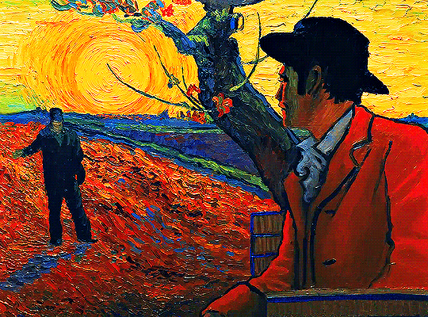

I know you’re feeling lost right now, like you’re wandering without a clear path or sense of direction.
It’s a confusing and disorienting place to be, and it’s okay to feel unsure or even scared.
Life doesn’t always make sense, and sometimes we find ourselves in places we never expected.
But being lost doesn’t mean you won’t find your way again. Sometimes, getting lost is part of the journey—
it’s how we discover new paths, learn about ourselves, and find out what truly matters.
Even when you can’t see the road ahead, trust that you are exactly where you need to be right now.
Each step you take, no matter how small, is bringing you closer to clarity.It’s okay to pause, to take a breath, and to gather your thoughts.
You don’t have to have all the answers right now. Give yourself permission to explore, to be curious, and to embrace the uncertainty.
The answers will come, often in the most unexpected ways.Remember, you are not alone in this.
There are people who care about you, who want to help you find your way. Reach out if you need to, and don’t be afraid to lean on others.
You have more strength and resilience than you realize, and you’ll find your way through this, step by step.
Keep going, keep believing in yourself, and trust that you’ll find your path again. You are stronger than you know, and the light will find you, even in the darkest moments.
